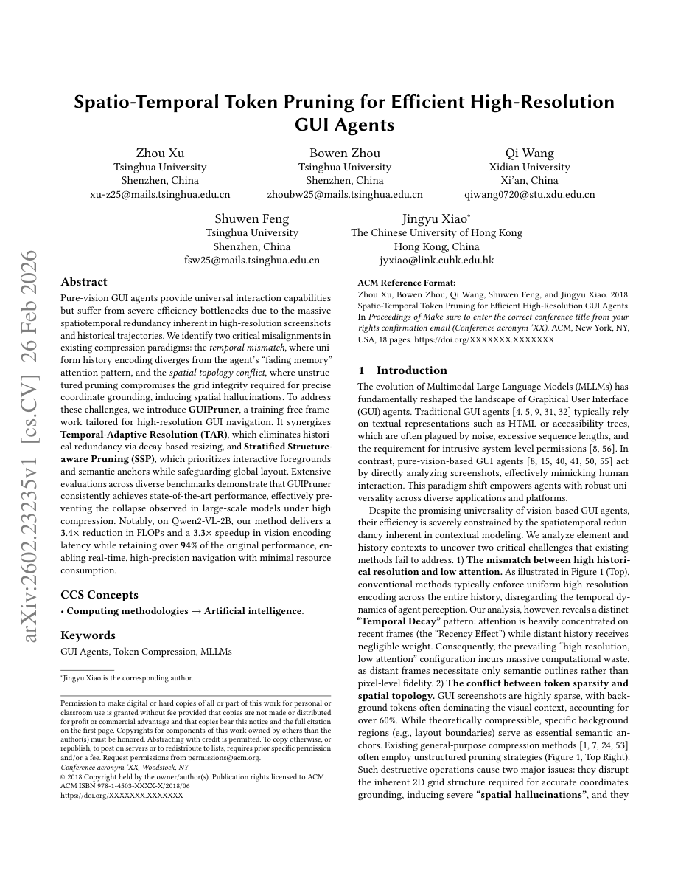
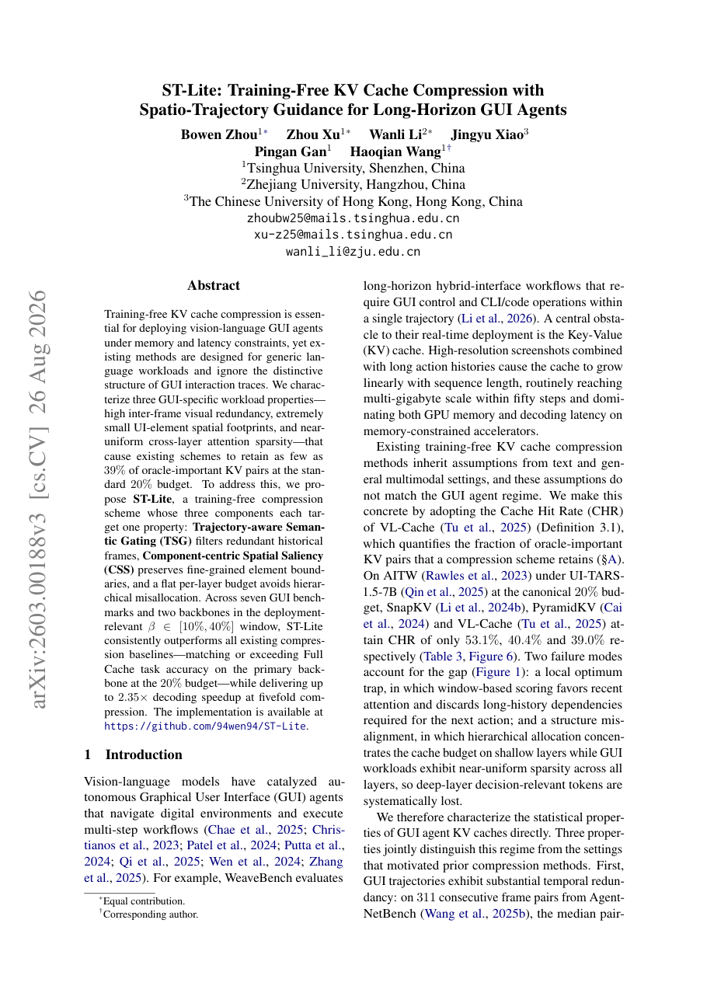
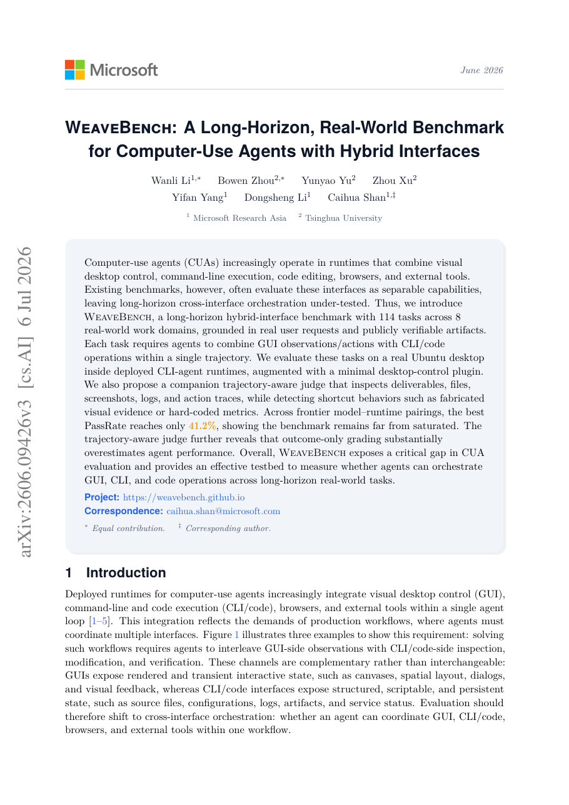
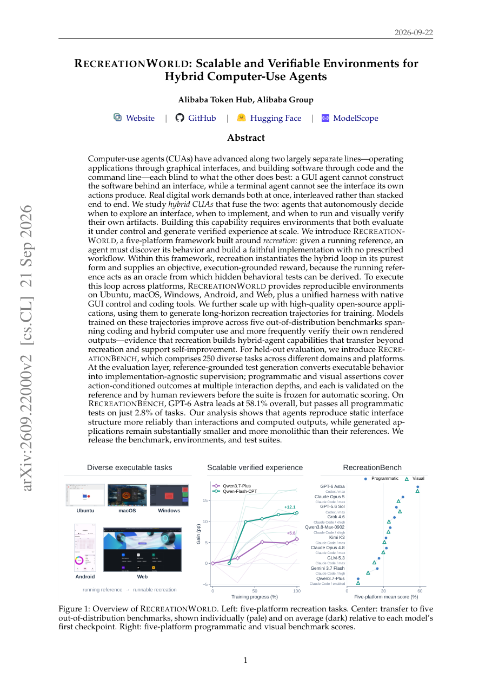

四、论文进度安排及预期达到目标
□ 已完成研究与成果状态

投稿 KDD 2027
GUIPruner
研究一 · 评测

EMNLP 2026
ST-Lite
研究一 · 评测

EMNLP 2026
WeaveBench
研究一 · 评测

技术报告 2026
RecreationWorld
研究二 · 训练
Qwen 团队 · 研究型实习
参与 Qwen3.8-Max 研发，研究一、二的评测环境与训练数据已应用于模型优化；在一线训练与评测中接触前沿基础模型在计算机操作与长程任务上的实际问题；本课题的研究问题源于一线训练与评测需求，所构建的评测、环境与数据可直接服务于基础模型后训练。
研究一（评测）与研究二（训练）已完成，形成可扩展评测与训练框架的基础；后续聚焦研究三（应用）